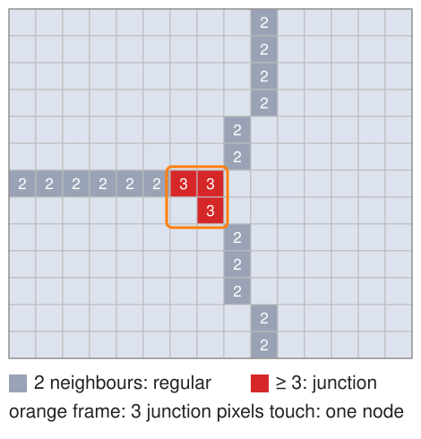
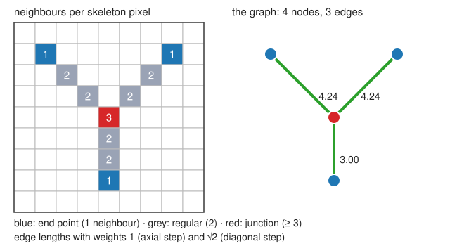
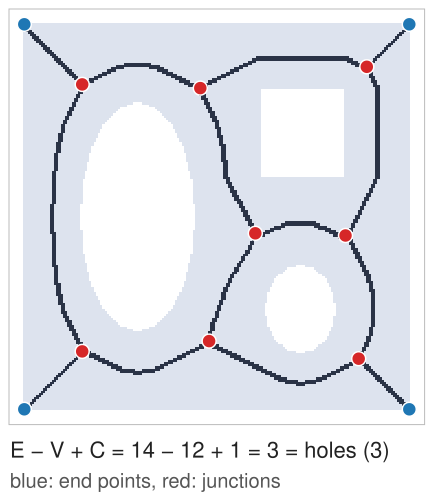
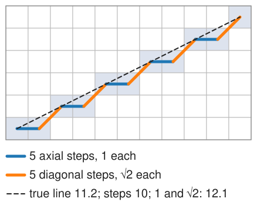
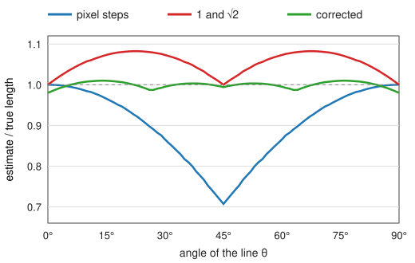
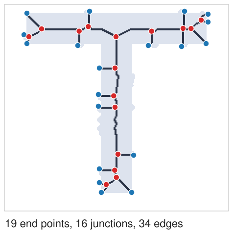
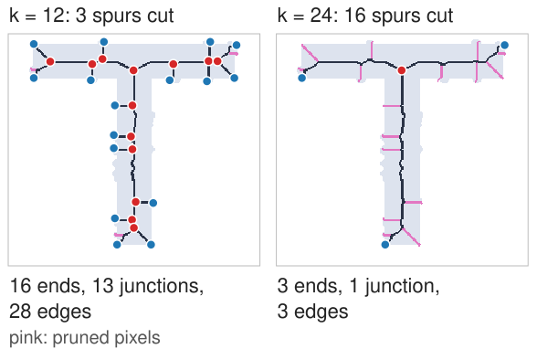

A skeleton is still a set of pixels. To count branches and measure lengths we turn it into a graph: nodes where lines end or meet, edges for the lines between them.
Slides titled The math give the formulas and proofs; the ideas are complete without them.
Count the skeleton neighbours of each skeleton pixel (8 neighbours):
The same as the hit-or-miss templates of the thinning unit (end-point and junction templates with their rotations), but quicker: just count.
At a junction, two or three neighbouring pixels can all have 3 neighbours: they form a junction cluster, which counts as one node (connected components, from the labelling day).


A tree has no cycles. Every hole in the shape gives the skeleton one loop around it (thinning keeps holes).

How long is a skeleton edge? Counting its pixels (or steps) treats a diagonal step like a straight one.

A straight line at angle \theta (0 \le \theta \le 45°) of length L is drawn with n_e = L(\cos\theta - \sin\theta) axial and n_o = L\sin\theta diagonal steps.

Boundary noise makes short side branches, spurs (medial-axis unit: one bump, one branch).

Remove the terminal edges shorter than k (or shorter than k times \mathrm{DT} at their junction):
